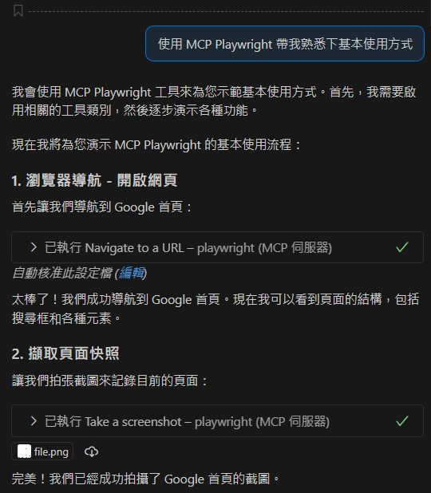
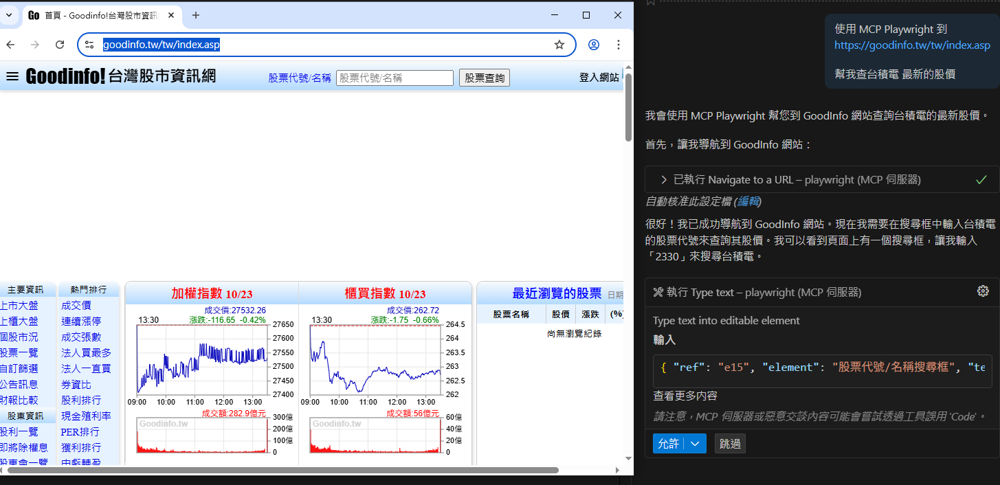
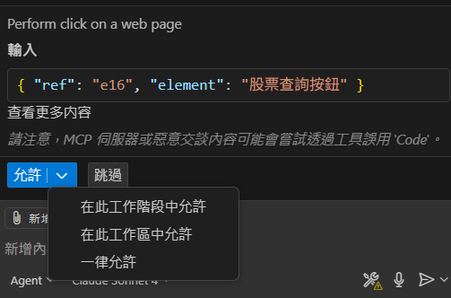
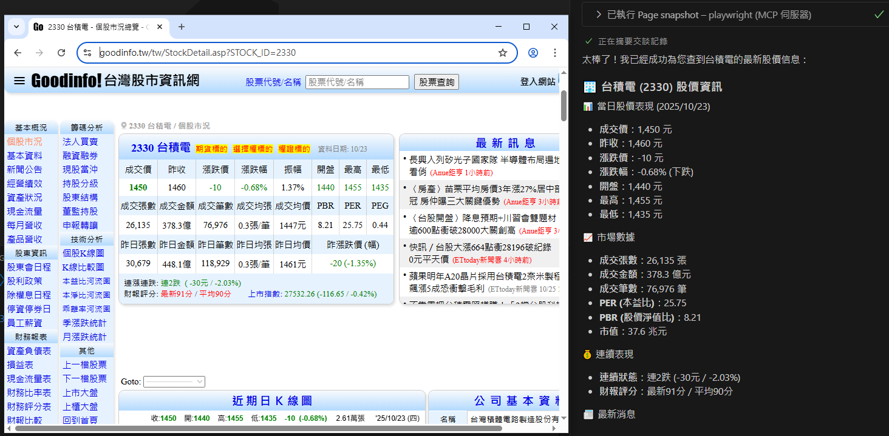
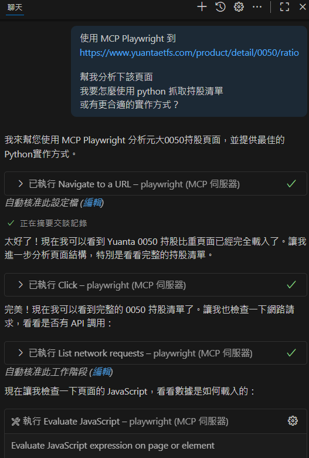
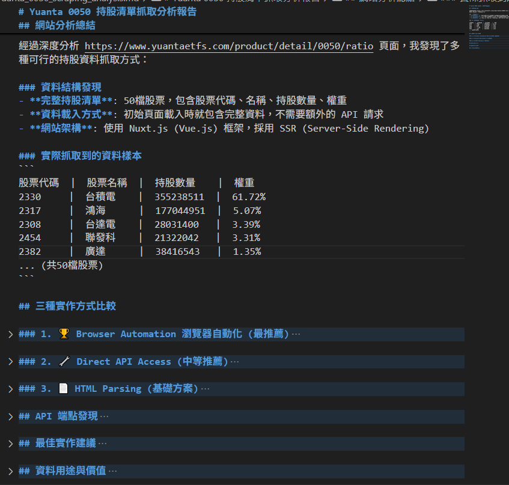

Playwright MCP 使用紀錄
近期在 VS Code 開發上使用了 MCP，自己安裝了以下幾個常用的套件：Oracle、PostgreSQL、Context7、Playwright、Chrome-DevTools 等。
這次要記錄的是 Playwright MCP 的使用。這個工具讓網頁自動化變得簡單，不用寫程式碼，只要用描述需求，就能讓 AI Agent 操作瀏覽器，完成需求。
Playwright 簡介
Playwright 是由 Microsoft 開發的開源瀏覽器自動化工具，常用於網頁測試與爬蟲開發。傳統的 Playwright 需要透過程式碼執行各種操作，例如：
- 程式化控制瀏覽器操作
- 自動化點擊、輸入等互動
- 內容驗證與測試
- 網頁爬蟲
Playwright MCP
Playwright MCP，是基於 Playwright 技術延伸到 AI Agent 自動化應用場景的新版本。最大不同在於不再需要撰寫程式碼，而是透過 AI 模型對話，由 AI Agent 代為操作瀏覽器完成任務。
Playwright MCP 安裝
前往 Playwright MCP GitHub 查看詳細的安裝文件，並根據使用的用戶端選擇對應的配置方式。
如果對 MCP 配置不太熟悉，可直接請 AI 協助配置，例如在 VS Code 中使用 Cline 或 GitHub Copilot 來引導安裝流程。
基本使用方法
最快熟悉 MCP Playwright 的方法是直接在 VS Code 中透過 GitHub Copilot 進行實際操作示範。

實際應用案例
股價查詢實例
使用 MCP Playwright 前往 台灣股市資訊網 查詢台積電最新股價的操作流程：

在執行過程中，模型會針對每個網頁操作步驟詢問是否同意執行，可逐步確認或直接授權全部同意。

成功完成股價查詢：

ETF 持股分析實例
以 0050 ETF 為例，用 MCP Playwright 分析 元大 0050 持股頁面：
我的需求：
“使用 MCP Playwright 到 https://www.yuantaetfs.com/product/detail/0050/ratio
幫我分析下該頁面，我要怎麼使用 python 抓取持股清單，或有更合適的實作方式？”

MCP Playwright 會分析網頁結構並提供建議。這次執行中，它生成了 .md 格式的分析報告，包含實作建議。

心得
MCP Playwright 讓網頁自動化變得簡單，不用寫程式碼，用文字描述需求就能操作瀏覽器，還會分析網頁結構提供技術建議。剛開始使用時比較謹慎，會逐步確認每個操作步驟，不敢一次讓它執行太多動作。
相比之前玩過的 Browser Use，MCP Playwright 的優勢是真正做到了零程式碼操作。Browser Use 雖也很強大，但還是要寫一些基本程式，而不是像 MCP 這樣直接在介面輸入需求就能執行。
整體使用下來，唯一比較明顯的缺點是執行速度稍慢，且需要使用較高階的 AI 模型，不過相信這些限制在未來都能逐步改善。想像如果未來我要爬取某個網頁資料，只要輸入簡單的敘述就能完成，而不用針對網站專門寫爬蟲。尤其是網頁結構經常改變導致爬蟲失效的問題，在這種技術下應該會變得更簡單吧！